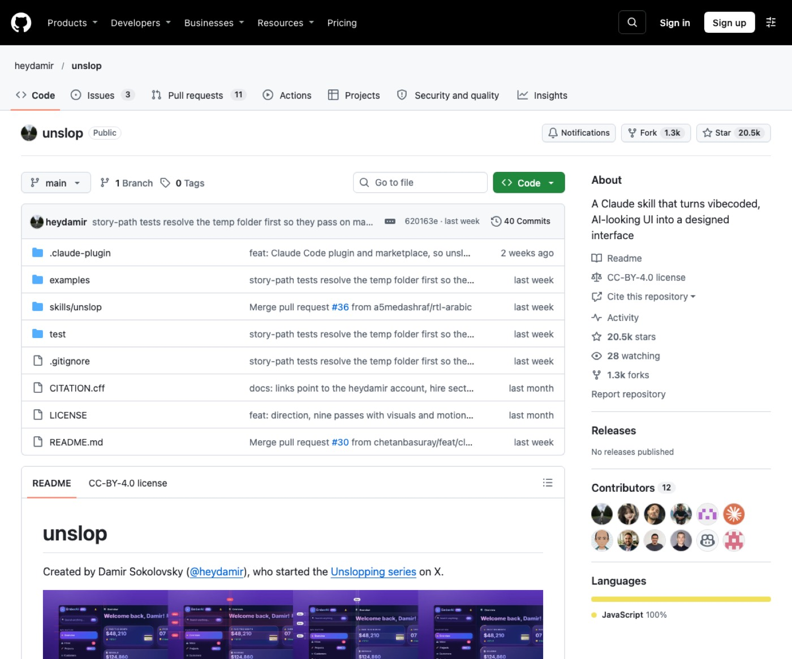

설치
클로드 코드(터미널에서 한 줄)
claude plugin install unslop --marketplace heydamir/unslop
옛 클로드 코드(두 줄)
claude plugin marketplace add heydamir/unslop
claude plugin install unslop@heydamir
설치 뒤
새 세션을 열거나 /reload-plugins
쓰는 법
- 클로드 코드를 내 화면 코드가 있는 폴더에서 열어요.
- /unslop this dashboard처럼 고칠 화면을 말해요. 클로드가 AI 티 목록과 방향을 먼저 보여 줘요.
- 방향이 마음에 들면 그대로 진행해요. 간격·색·아이콘·문구 순서로 고쳐요.
바로 쓰는 요청문
/unslop the hero of https://내사이트주소
/unslop my landing page and make the story video so I can post it
AI 티 60가지 한글 목록(이렇게 보이면 → 이렇게 고친다)
- 면·색 1 — 보라→파랑, 보라→분홍 그라데이션 배경·카드·버튼 → 무채색 한 면, 강조색은 뜻 있는 곳에만
- 면·색 2 — 제목·숫자·로고에 그라데이션 글자 → 단색 글자
- 면·색 3 — 색 있는 빛 번짐 그림자, 빛나는 알약 → 빼고, 깊이는 면 단계와 가는 선으로
- 면·색 4 — 글 뒤 퍼지는 색 얼룩·흐린 덩어리 → 뺀다
- 면·색 5 — 네온·진한 색 테두리 → 투명도 6~10% 가는 선
- 면·색 6 — 비슷한 연보라 다섯 개 같은 글자색 → 한 무채색 사다리에서 글자 역할 셋
- 면·색 7 — 전부 강조해서 아무것도 안 튐 → 강조색은 한 화면에 한두 번
- 면·색 8 — 흰 안쪽 반사광 + 색 그림자 유리 카드 → 가는 선 두른 평범한 카드
- 글꼴 1 — 굵기 800·900 제목 → 400~500, 위계는 크기로
- 글꼴 2 — 자간 넓힌 대문자 라벨 → 보통 문장 대소문자
- 글꼴 3 — 한 화면에 크기·굵기가 너무 많음 → 정해진 몇 단계, 굵기 400·500
- 글꼴 4 — $48,210 옆 $124,860.40처럼 섞인 숫자 형식 → 한 형식, 고정폭 숫자
- 글꼴 5 — 작은 글자에 좁힌 자간 → 0이나 살짝 넓게
- 글꼴 6 — 강조에 기울임꼴 → 색이나 굵기로
- 아이콘 1 — 메뉴·라벨·상태에 이모지(🏠 🚀 💰 🔥) → 선 아이콘 한 벌이나 없음
- 아이콘 2 — 알약·숫자 속 이모지(18 👤) → 숫자만
- 아이콘 3 — 크기·색 제각각 아이콘 → 한 크기, 한 선 굵기
- 아이콘 4 — 줄에서 비뚤게 놓인 아이콘 → 줄마다 같은 아이콘 칸 폭
- 아이콘 5 — AI 붙은 곳마다 반짝이 ✨ → 빼거나 설명이 될 때만 평범한 아이콘
- 간격 1 — 13px·7px·31px 같은 제멋대로 값 → 4px 눈금
- 간격 2 — 한 목록 안 줄 높이·간격이 다름 → 한 높이, 한 간격
- 간격 3 — 자기 무리보다 옆 무리에 더 붙은 묶음 → 안은 좁게, 사이는 넓게
- 간격 4 — 형제 카드끼리 안쪽 여백이 다름 → 한 여백
- 간격 5 — 위는 휑하고 아래는 빽빽 → 고른 리듬
- 문구 1 — '다시 오셨네요! 👋' 인사 제목 → 페이지나 기간 이름을 제목으로
- 문구 2 — 느낌표·!! → 평서문
- 문구 3 — 기준 없는 변화(+12%!!) → '+12% 지난달 대비'
- 문구 4 — '뭐든 검색하세요…' 같은 긴 안내 문구 → '검색'
- 문구 5 — 혁신·끊김 없는·마법 같은 과장어 → 실제로 하는 일
- 문구 6 — 라벨·버튼 끝 마침표 → 없음
- 문구 7 — $123,456·[X] 같은 가짜 같은 데이터 → 그럴듯한 숫자
- 부품 1 — 숫자·요금제·단축키에 빛나는 알약 → 조용한 고정폭 글자나 키캡
- 부품 2 — PRO·New ✨·Beta 🚀 배지 남발 → 빼거나 조용한 글자 배지 하나
- 부품 3 — 검색창부터 카드까지 전부 알약 모양 → 크기에 맞는 둥글기
- 부품 4 — 무지개·빛나는·알약 모양 막대, 대문자 요일 차트 → 한두 계열, 흐린 눈금, 강조색 하나
- 부품 5 — 모든 차트를 강조색 여러 농도로 → 무채색 단계, 강조색은 중요한 하나에만
- 부품 6 — 숫자 카드마다 작은 선 그래프 → 숫자·이름·변화만
- 부품 7 — 같은 차트 든 같은 카드 나란히 → 큰 차트 하나, 작은 숫자들, 폭을 다르게
- 부품 8 — 반짝이 붙은 그라데이션 로고 → 글자 이름 + 단순한 평면 마크
- 부품 9 — 번들번들한 구슬·빛나는 점 로고 → 단색 평면 기호나 글자 로고만
- 첫 화면 1 — 제목 위 '✨ X 2.0 출시' 알약 → 빼거나 진짜 소식이면 조용한 글자 링크
- 첫 화면 2 — 'AI로 일을 슈퍼차지하세요'처럼 아무 제품에나 맞는 제목 → 누구에게 뭘 해 주는지
- 첫 화면 3 — 제목에 그라데이션·반짝임 → 단색 글자
- 첫 화면 4 — 첫 화면 뒤 떠다니는 덩어리·구슬·격자·빛나는 선 → 평범한 바탕이나 실제 제품 그림 하나
- 첫 화면 5 — 제목·글·버튼·그림 전부 가운데 쌓기 → 비대칭 나누기나 큰 제품 화면 위 글
- 첫 화면 6 — 버튼 세 개 이상, 버튼 밑 칩·얼굴 줄 → 주 버튼 하나, 보조 하나까지
- 첫 화면 7 — 출처 없는 '1만 팀이 신뢰'·별 다섯 개 → 진짜인지 묻고, 구체적으로 줄이거나 뺀다
- 첫 화면 8 — 스크롤할 때 떠다니는 시차 효과 → 고정 배치, 움직임은 까닭 있을 때만
- 첫 화면 9 — 이모지 + 굵은 제목 + 흐릿한 한 줄 기능 카드 → 기능 줄이고 구체적 문구
- 그림 1 — 번들거리는 3D 덩어리·구슬·크롬·보라 성운 → 제품 자체나 하는 일을 보여 주는 비유 하나
- 그림 2 — AI라면 로봇·빛나는 뇌·회로선·홀로그램 → 빼거나 AI가 실제로 만든 결과
- 그림 3 — 그림 속에 박힌 글자·가짜 버튼·가짜 로고 → 페이지의 진짜 글자, 글 없는 그림
- 그림 4 — 모서리가 딱 끊기고 검정이 다른 그림 → 바탕 맞추고 가장자리 부드럽게
- 그림 5 — 모든 구역에 그림 → 도움 될 때만 하나, 보통 첫 화면만
- 움직임 1 — 살아 있지 않은 것에 깜빡임·숨 쉬는 빛 → 고정
- 움직임 2 — 카드·버튼마다 커지는 호버 → 색·면 단계, 누를 때만 살짝 작게
- 움직임 3 — 통통 튀는 스프링·지나침 → 부드럽게 멈추는 곡선 하나
- 움직임 4 — 로드 때 사방에서 날아드는 요소 → 짧게 나타나며 살짝 올라오기, 작은 시차
- 움직임 5 — 스크롤 시차·떠다니는 반복 → 고정 배치
- 움직임 6 — 너비·높이·위치를 움직임 → transform·opacity로
사이트 주소만으로 화면을 찍거나 영상을 만들려면 Playwright와 크로미움, 영상에는 ffmpeg가 더 필요해요. 그림을 새로 만들 때는 유료 서비스를 쓸 수 있어서, 돈 드는 생성 전에는 꼭 물어봐요.